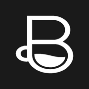
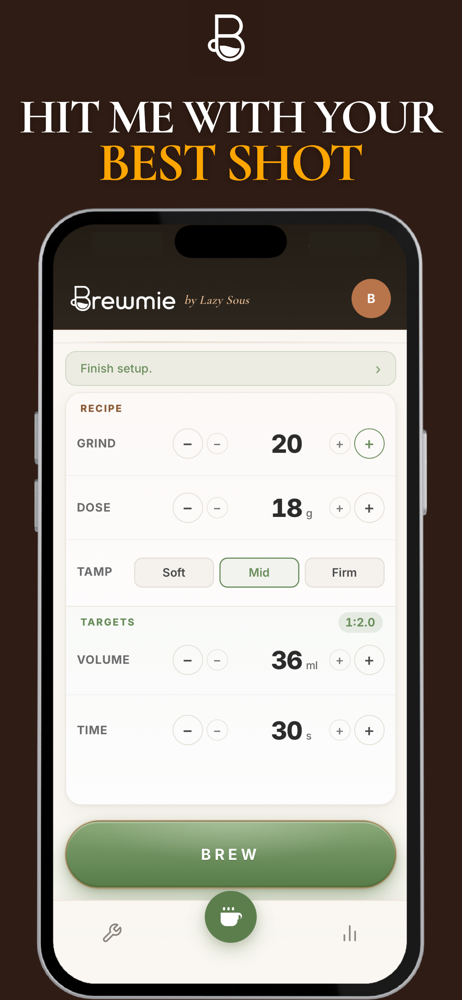
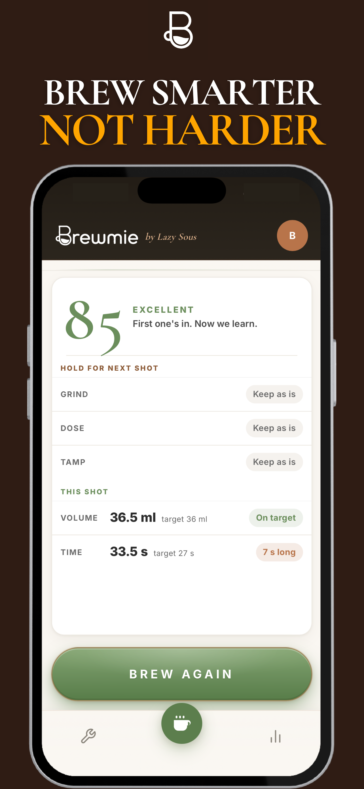
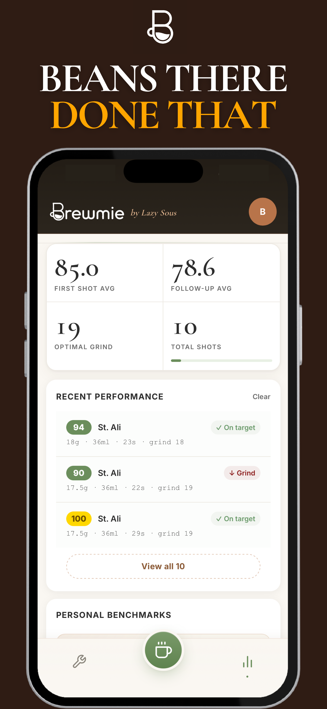
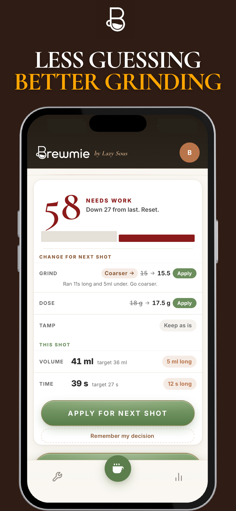
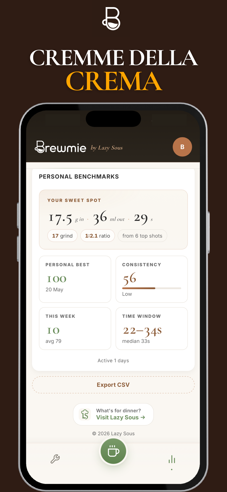

Shot timer that listens
Tap BREW. Stop when it's done. Rate the crema and the taste. Brewmie does the rest.

Espresso shot dial-in coach





Tap BREW. Stop when it's done. Rate the crema and the taste. Brewmie does the rest.
Not "go a bit finer." Grind 31.5 to 30.5, with the reason underneath.
25+ machines, 100+ grinders with their real dial ranges. Numbers in your units.
Bag follows you across days. Roast date, age, and last setting remembered.
Brewmie is a free espresso dial-in app for iOS and Android. Pull a shot, tell Brewmie how it tasted, and the coach returns the next specific change for the next shot (grind, dose, or yield) in your grinder's actual dial units. 25+ machine brands and 100+ grinder models supported. Bean profiles travel across bags. Free with a one off premium upgrade, not a subscription.
Every home barista runs the same loop: pull, taste, adjust, pull again, taste, adjust, until the cup is balanced. The hard part is knowing which variable to move and how far. Brewmie watches the four signals that matter (shot time, yield ratio, taste descriptors, bean age) and converts them into one specific dial change at a time.
Set up your kit once: espresso machine, grinder, the bag you're pulling from. Pull a shot. Stop the timer. Rate the crema and the taste with two taps (sour, bitter, channelling, gusher, weak, balanced). Brewmie returns one move: grind 31.5 to 30.5, drop the dose by 0.3 g, pull 2 seconds longer. With the reason underneath. Apply, pull again, repeat until the cup lands.
No essays. No calorie counts. No 47-step onboarding. No subscription. One purchase, yours forever. Brewmie is the app you want when you're standing at the machine in pyjamas before work and the milk is steaming. Two taps to log. One screen to rate. One number to dial. Just espresso.
Home baristas who bought the prosumer machine and the single-dose grinder and now have to learn how to use them. People who keep a notebook full of "grind 5.5, too sour, try 5.0" scribbles and want to throw it away. Coffee gift recipients who own the gear and want to actually use it. Cafes wanting a consistent dial-in log across staff. Anyone tired of paying monthly for a barista app that should just work.
Same anti-subscription, one-off purchase, respect-the-user policy. Different problem. Lazy Sous plans a whole week of family dinners in one tap. Brewmie dials in your espresso. Both built by people who hate apps that nag.